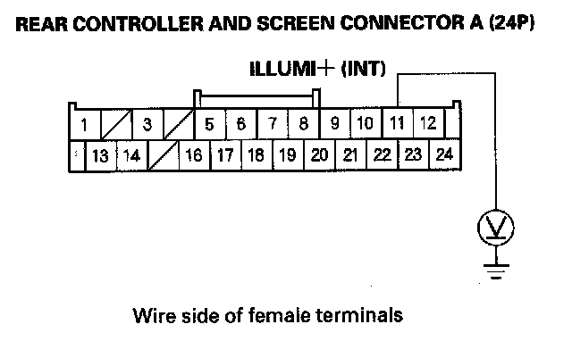
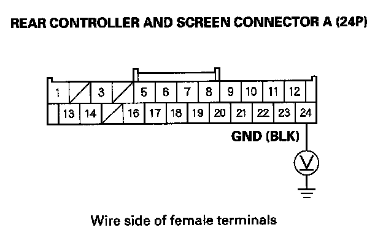

Screen backlight does not dim/remains dim
Screen backlight does not dim/remains dim1. Turn the ignition switch ON (II).
2. Turn the combination light switch ON and OFF.
Does the screen backlight dim with the combination light switch in the ON position?
YES - Operation is normal at this time.
NO - Go to step 3.
3. Check the backlight settings in the display set up (refer to the Owner's Manual for more information).
Are the display settings set properly?
YES - Go to step 4.
NO - Adjust the display settings and recheck the function.
4. Turn the ignition switch OFF.
5. Check that the rear controller and screen and audio unit are properly connected.
Are the connections OK?
YES - Go to step 6.
NO - Reconnect the connector, and recheck the function.
6. Disconnect the rear controller and screen connector A (24P).
7. Turn the ignition switch ON (II).

8. Measure the voltage between the rear controller and screen connector A (24P) No. 11 terminal and body ground. Turn the combination light switch on and off to see if the voltage changes.
Is there battery voltage with the combination light switch ON?
YES - Go to step 10.
NO - Go to step 9.
9. Check the illumination of several other unit/switches not related to the rear entertainment system.
Are the buttons illuminated?
YES - Repair open in the wire(s) between the interior light relay in the auxiliary under-hood relay box and the rear controller and screen.
NO - Troubleshoot the interior lights. Start by checking the interior light relay in the auxiliary under-hood relay box. If the relay is OK, check the No. 22 (7.5 A) fuse in the under-hood fuse/relay box. If there is OK, check for open in the wire between the under-hood fuse/relay box and the interior light relay.
10. Reconnect the rear controller and screen connector A (24P).

11. Measure the voltage between the rear controller and screen connector A (24P) terminal No. 24 and body ground.
Is there less than 0.1 V?
YES - Replace the rear controller and screen.
NO - Repair open in the wire between rear controller and screen connector A (24P) terminal No. 24 and body ground (G506).